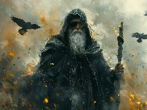
Odinwiki-fr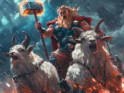
Thorwiki-fr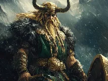
Lokiwiki-fr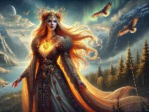
Freyjawiki-fr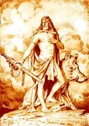
Freyrbing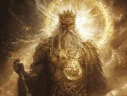
Baldrwiki-fr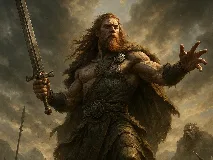
Týrimposée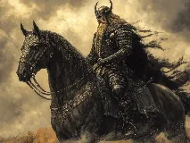
Heimdallwiki-fr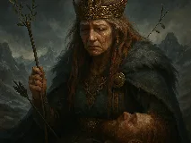
Friggwiki-fr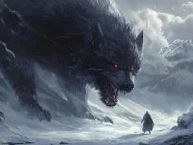
Fenrirwiki-fr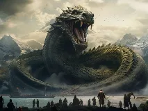
Jörmungandrbing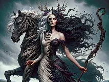
Helwiki-fr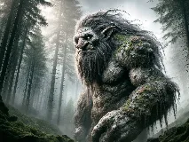
Troll scandinavewiki-fr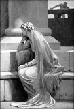
Sifwiki-fr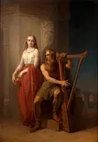
Bragiwiki-fr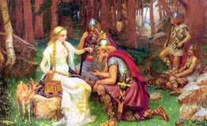
Idunnwiki-fr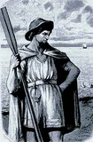
Njördbing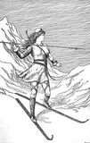
Skadiwiki-fr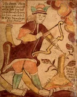
Ullrwiki-fr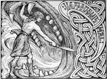
Vidarwiki-fr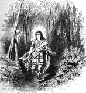
Valiwiki-fr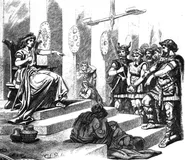
Forsetiwiki-fr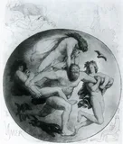
Ymirwiki-fr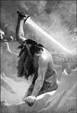
Surtwiki-fr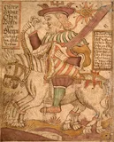
Sleipnirwiki-fr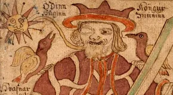
Huginn et Muninnwiki-fr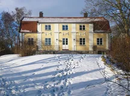
Yggdrasilbing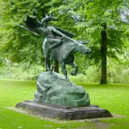
Valkyriewiki-fr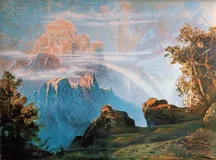
Valhallawiki-fr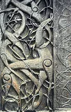
Ragnarökwiki-fr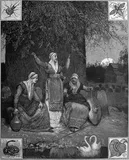
Norneswiki-fr Mjöllnirwiki-fr
Mjöllnirwiki-fr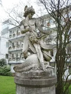
Sigurdwiki-fr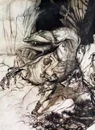
Fáfnirwiki-fr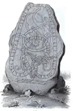
Nídhöggwiki-en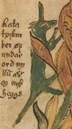
Ratatoskwiki-fr